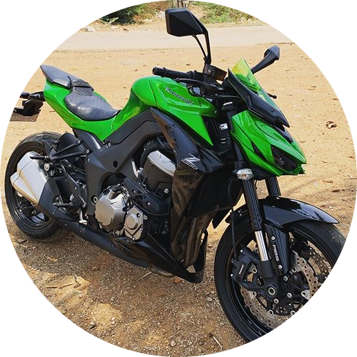

Ruslan Gorbaty
A computer science graduate, electronics practical engineer.
Knowledge in the networking area(Cisco Certified Network Associatecertificate).
Currently specializing in full-stack development.
Languages: English, Hebrew, Russian, Ukrainian.
Infinity soldier.
Education:
-
-
Holtz (Air force academy):
- Military academy for practical engineer degree
-
-
Uvda & Ygmar 80 midttary service:
- Full military service and network administrator and IT support for network infrastructure.
-
-
Holon Institute of Technology:
- Graduation in computer science.
-
-
Infinity Labs R&D:
- Becoming an ultimate programmer and software developer, a machine that doesn't sleep eat or shit, a wizard in the land of bits and pointers, becoming Neo like in the matrix:
Hobbies:
-
-
Street workout:
-
Calisthenics based workout, where you exercise with your own body weight.
-
-
Cycling:
-
Ride on tracks, downhills, and amateur competitions.
-
-
Freediving:
-
Underwater diving that relies on breath-holding until resurfacing rather than the use of breathing apparatus such as scuba gear.